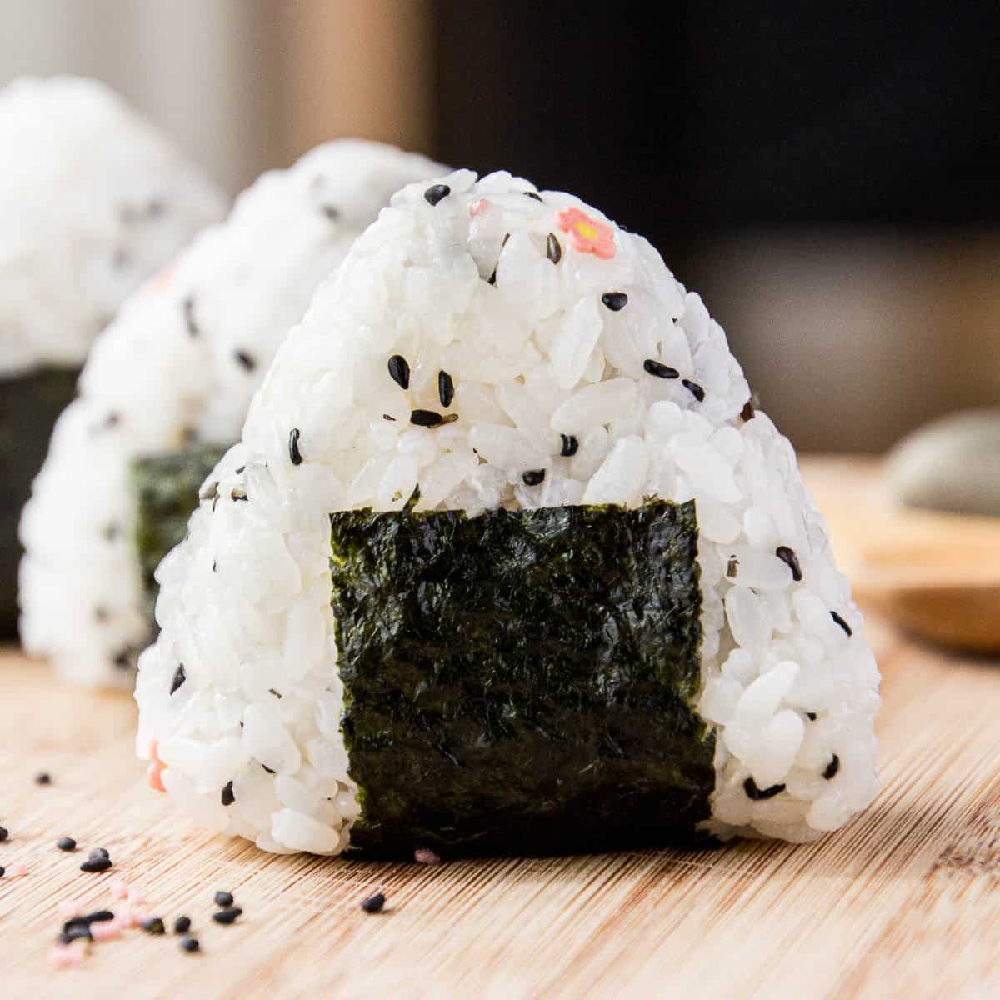

Onigiri Recipe

Description
Onigiri is basically a Japanese rice ball made from white rice formed into either triangular or cylindrical shapes and often wrapped in nori (seaweed).
The most popular fillings for onigiri are ume, salted salmon, tarako, kombu, or katsuobushi.
Ingredients
- 4 cups steamed Japanese rice
- Dash salt (or to taste)
- Optional: black sesame seeds
- Optional: 1 to 2 sheets of dried nori seaweed
- Fillings
- Optional: ume (pickled plum)
- Optional: grilled salted salmon (small chunks)
Steps
- Cut each nori sheet into 8 to 9 strips and put about a half cup of steamed rice in a rice bowl.
- Wet your hands with water and rub some salt on them (rice tends to stick if you don't do this).
- Place the steamed rice on your hand and put your preferred filling (such as umeboshi or grilled salmon) on the rice and push the filling into the rice.
- Hold the rice between your palms.
- Form the rice into a round, a triangle, or a cylinder by pressing lightly with your both palms. Roll the rice ball in your hands a few times, pressing lightly.
- Wrap the rice ball with a strip or two of nori, or sprinkle some sesame seeds on them.